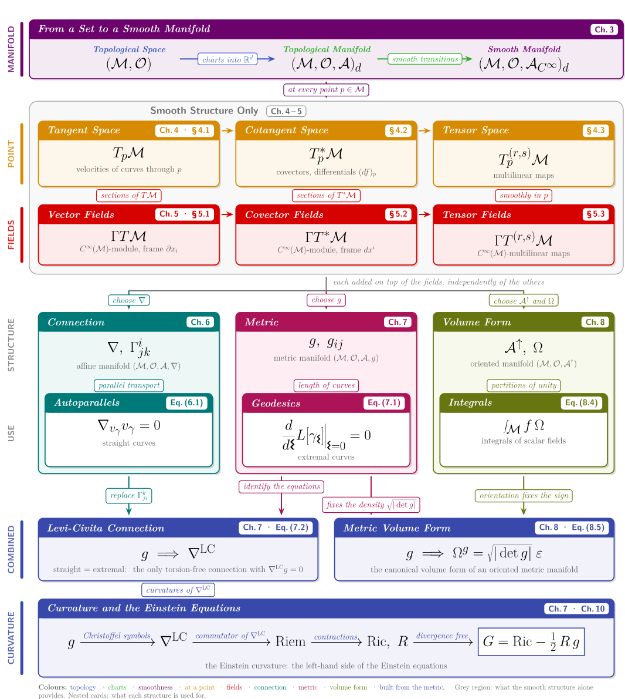

FROM DIFFERENTIAL
GEOMETRY TO
GENERAL RELATIVITY
Lecture notes for building a rigorous and practical mathematical understanding of General Relativity, with illustrative examples and hands-on computational resources.
Department of Mathematical Physics, Institute of Physics, University of São Paulo
R. do Matão 1371, 05508-090, São Paulo, SP, Brazil

“Thank the heavens for their elasticity.”
To anyone who has ever felt more like a scholar than an academic, those who would gladly “waste” their time seeking to understand the fundamental laws of nature, rather than racing to publish an inconsequential paper in the pointless productivist cycle that drives our academic system; those who would rather dwell a lifetime with a question than rush to claim an answer.